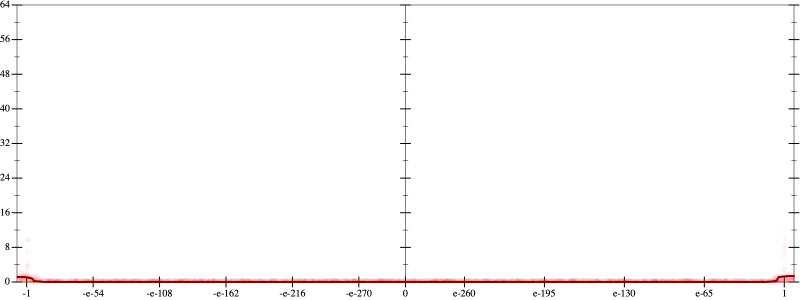
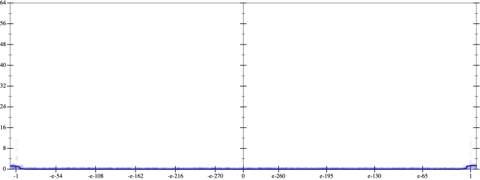
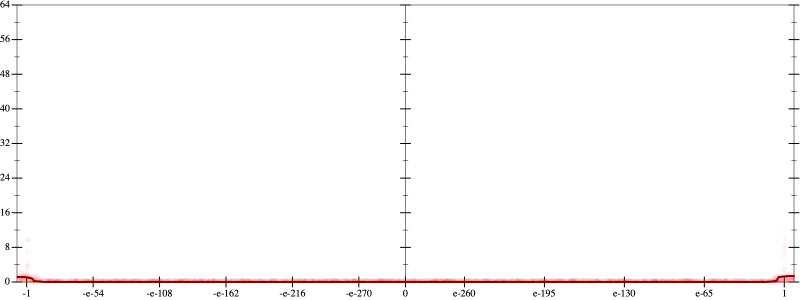
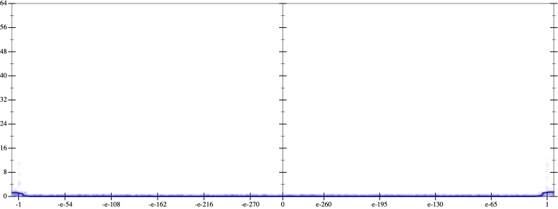

Initial program 0.0
\[\left(\left(\left(\left(-2.707031 \cdot x + 58.652344 \cdot \left(\left(x \cdot x\right) \cdot x\right)\right) + -351.914062 \cdot \left(\left(\left(\left(x \cdot x\right) \cdot x\right) \cdot x\right) \cdot x\right)\right) + 854.648438 \cdot \left(\left(\left(\left(\left(\left(x \cdot x\right) \cdot x\right) \cdot x\right) \cdot x\right) \cdot x\right) \cdot x\right)\right) + -902.128906 \cdot \left(\left(\left(\left(\left(\left(\left(\left(x \cdot x\right) \cdot x\right) \cdot x\right) \cdot x\right) \cdot x\right) \cdot x\right) \cdot x\right) \cdot x\right)\right) + 344.449219 \cdot \left(\left(\left(\left(\left(\left(\left(\left(\left(\left(x \cdot x\right) \cdot x\right) \cdot x\right) \cdot x\right) \cdot x\right) \cdot x\right) \cdot x\right) \cdot x\right) \cdot x\right) \cdot x\right)\]
Applied simplify0.1
\[\leadsto \color{blue}{\left(\left({x}^{3} \cdot \left({x}^{3} \cdot {x}^{3}\right)\right) \cdot \left(x \cdot \left(x \cdot 344.449219\right) + -902.128906\right) + \left(\left(\left(854.648438 \cdot x\right) \cdot \left(x \cdot x\right)\right) \cdot \left(\left(x \cdot x\right) \cdot \left(x \cdot x\right)\right) + -2.707031 \cdot x\right)\right) + \left(x \cdot x\right) \cdot \left(58.652344 \cdot x + \left(x \cdot -351.914062\right) \cdot \left(x \cdot x\right)\right)}\]
- Using strategy
rm Applied add-cbrt-cube0.1
\[\leadsto \left(\left({x}^{3} \cdot \left({x}^{3} \cdot {x}^{3}\right)\right) \cdot \left(x \cdot \left(x \cdot 344.449219\right) + -902.128906\right) + \left(\left(\left(854.648438 \cdot x\right) \cdot \left(x \cdot x\right)\right) \cdot \left(\left(x \cdot x\right) \cdot \color{blue}{\sqrt[3]{\left(\left(x \cdot x\right) \cdot \left(x \cdot x\right)\right) \cdot \left(x \cdot x\right)}}\right) + -2.707031 \cdot x\right)\right) + \left(x \cdot x\right) \cdot \left(58.652344 \cdot x + \left(x \cdot -351.914062\right) \cdot \left(x \cdot x\right)\right)\]
Applied add-cbrt-cube0.1
\[\leadsto \left(\left({x}^{3} \cdot \left({x}^{3} \cdot {x}^{3}\right)\right) \cdot \left(x \cdot \left(x \cdot 344.449219\right) + -902.128906\right) + \left(\left(\left(854.648438 \cdot x\right) \cdot \left(x \cdot x\right)\right) \cdot \left(\color{blue}{\sqrt[3]{\left(\left(x \cdot x\right) \cdot \left(x \cdot x\right)\right) \cdot \left(x \cdot x\right)}} \cdot \sqrt[3]{\left(\left(x \cdot x\right) \cdot \left(x \cdot x\right)\right) \cdot \left(x \cdot x\right)}\right) + -2.707031 \cdot x\right)\right) + \left(x \cdot x\right) \cdot \left(58.652344 \cdot x + \left(x \cdot -351.914062\right) \cdot \left(x \cdot x\right)\right)\]
Applied cbrt-unprod0.1
\[\leadsto \left(\left({x}^{3} \cdot \left({x}^{3} \cdot {x}^{3}\right)\right) \cdot \left(x \cdot \left(x \cdot 344.449219\right) + -902.128906\right) + \left(\left(\left(854.648438 \cdot x\right) \cdot \left(x \cdot x\right)\right) \cdot \color{blue}{\sqrt[3]{\left(\left(\left(x \cdot x\right) \cdot \left(x \cdot x\right)\right) \cdot \left(x \cdot x\right)\right) \cdot \left(\left(\left(x \cdot x\right) \cdot \left(x \cdot x\right)\right) \cdot \left(x \cdot x\right)\right)}} + -2.707031 \cdot x\right)\right) + \left(x \cdot x\right) \cdot \left(58.652344 \cdot x + \left(x \cdot -351.914062\right) \cdot \left(x \cdot x\right)\right)\]
Applied simplify0.1
\[\leadsto \left(\left({x}^{3} \cdot \left({x}^{3} \cdot {x}^{3}\right)\right) \cdot \left(x \cdot \left(x \cdot 344.449219\right) + -902.128906\right) + \left(\left(\left(854.648438 \cdot x\right) \cdot \left(x \cdot x\right)\right) \cdot \sqrt[3]{\color{blue}{{\left({x}^{3}\right)}^{\left(3 + 1\right)}}} + -2.707031 \cdot x\right)\right) + \left(x \cdot x\right) \cdot \left(58.652344 \cdot x + \left(x \cdot -351.914062\right) \cdot \left(x \cdot x\right)\right)\]
 
